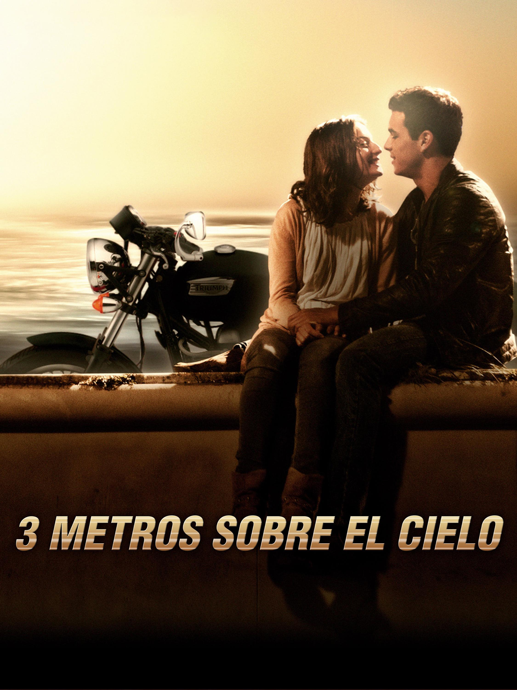
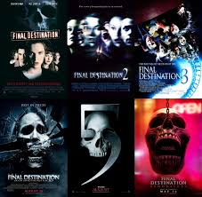
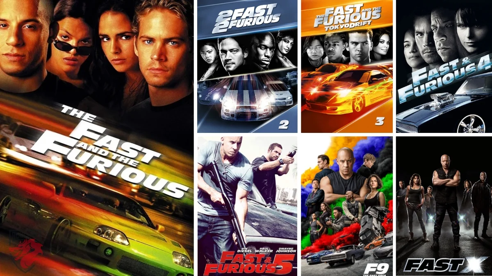

En esta sección encontrarás reseñas de películas que han dejado huella en la pantalla grande. Desde sagas de acción y suspenso hasta dramas románticos inolvidables, cada reseña ofrece una mirada clara al argumento, los personajes y el impacto de la historia. Ya sea que busques una recomendación o quieras revivir una película que ya viste, aquí tienes un espacio pensado para los amantes del cine.
Tres metros sobre el cielo
Director: Fernando González Molina Género: Romance, drama Protagonistas: Mario Casas, María Valverde

"Tres metros sobre el cielo" es una historia de amor juvenil intensa y apasionada. Babi, una chica de clase alta, y Hache, un joven rebelde con un pasado turbulento, viven una relación llena de contrastes, emociones y conflictos. Ambientada en España, la película explora la diferencia de mundos y la fuerza del primer amor.
Con una fotografía moderna y una banda sonora emotiva, esta película se convirtió en un clásico entre los adolescentes. Aunque algunos la consideran predecible, logró conectar con el público por su intensidad emocional.
Director principal: James Wong (película original) Género: Terror, suspenso, sobrenatural

La saga "Destino final" se basa en un concepto original: un grupo de personas escapa milagrosamente de la muerte tras una premonición, pero luego comienzan a morir uno por uno de forma misteriosa y elaborada. La "muerte" actúa como una fuerza invisible que reclama lo que debió suceder.
Cada película se caracteriza por escenas impactantes y muertes creativas. Aunque no se centra en monstruos o asesinos, logra mantener tensión constante. Es una saga de culto dentro del género del suspenso sobrenatural.
Ya se estrenó en cines la esperada Destino Final 6. Esta nueva entrega promete mantenernos al borde del asiento con escenas aún más sorprendentes y nuevas formas en que la muerte reclama su curso.
Tráiler oficial de Destino Final 6
Rápidos y Furiosos (Saga)
Creador: Gary Scott Thompson Género: Acción, autos, crimen Protagonistas: Vin Diesel, Paul Walker, Michelle Rodríguez, entre otros

"Rápidos y Furiosos" es una de las franquicias más populares del cine de acción. Lo que empezó como una historia sobre carreras callejeras evolucionó hacia una saga internacional llena de misiones peligrosas, autos increíbles y un fuerte mensaje sobre la familia.
A lo largo de las películas, la acción se vuelve cada vez más extrema, con escenas explosivas y acrobacias espectaculares. Aunque no es realista, su éxito radica en la espectacularidad, el carisma de los personajes y la emoción que genera.